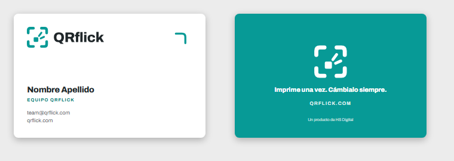
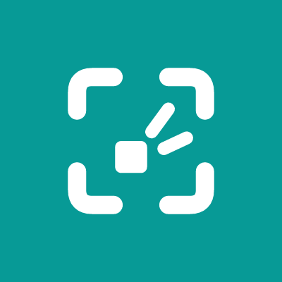

Guía de marca · QRflick
Imprime una vez.
Cámbialo siempre.
Cómo se ve, cómo suena y cómo aparece QRflick. Para diseñadores, imprentas, socios y cualquiera que haga algo con nuestro nombre.
Cómo se ve, cómo suena y cómo aparece QRflick. Para diseñadores, imprentas, socios y cualquiera que haga algo con nuestro nombre.
QRflick es un QR que puedes cambiar después de imprimirlo. Imprimes una vez y cambias adónde lleva desde el móvil. Tus códigos siguen funcionando aunque dejes de pagar.
Gente que imprime cosas y odia reimprimirlas.
Dejas de pagar en otro sitio y el código muere en 500 flyers.
Edita cuando quieras. Plan gratis para siempre. Tus códigos son tuyos.
Cuatro esquinas de un marco de escáner, un módulo de datos y dos trazos de movimiento: el código cambiando. Usa siempre los archivos de logo/. Nunca reescribas el wordmark.
Las cuatro esquinas del visor de la cámara.
Un cuadrado del código: la unidad del área de respeto.
Dos trazos: el destino que cambia.
QRflick en Archivo 800, dibujado en vectores.
Se escribe QRflick: Q y R en mayúscula, “flick” en minúscula. Nunca “QR Flick”, “Qrflick” ni “QRFlick”.
Elige la versión según el espacio y el fondo. Nunca crees versiones nuevas fuera de este sistema.
Deja libre alrededor del logotipo un espacio igual a X: la altura del módulo de datos (el cuadrado pequeño) × 2, por todos los lados.
Por debajo de 24 mm usa solo la marca. En tamaños pequeños, la versión Teal Deep se lee mejor que Teal.
Para que el logotipo se reconozca siempre, nunca lo modifiques.
El teal marca lo que importa: el código, la acción, el cambio. Todo lo demás es neutro. Apunta a un 10% de teal en cada pieza.
Imprime el código en Ink o Teal Deep sobre blanco. El Teal normal puede escanear mal en papel barato.
Texto: Ink o Slate sobre Paper o blanco. Sobre Teal, solo blanco y a 14 pt o más.
Pide una prueba. Iguala el Teal a Pantone 7716 C (la referencia más cercana; revisa la prueba).
Gratis en Google Fonts · 400 500 600 700 800
Alternativa: Helvetica Neue, Arial
Todo: titulares, textos, botones y el wordmark. El contraste sale del peso y el tamaño, no de una segunda fuente.
Archivo en todo. El contraste sale del peso y el tamaño.
Titulares en tipo frase. Mayúsculas solo en etiquetas pequeñas.
Archivo 800, blanco sobre panel Night al 85%, máximo 6 palabras por rótulo.
Útiles, rápidos y un poco pícaros. Nunca corporativos, nunca pesados.
Siempre informal. Como hablar a través del mostrador.
Una idea por frase. Si necesita una coma, prueba con un punto.
Palabras sencillas, se permite un guiño. Nunca un chiste a costa del cliente.
QR que se cambia, editar, escanear, tu código, gratis, sin reimprimir.
“Dinámico” (explícalo la primera vez), “solución”, “plataforma”, “potenciar”, “sinergia”.
Sin caras, natural, de cerca. El QR y el móvil son los protagonistas. Nada de sonrisas de banco de imágenes ni luz de estudio.
Deja el texto a 250 px del borde superior e inferior en un marco de 1080 × 1920 (la interfaz de la app lo tapa).
12–25 s. Corta en cada pitido de escaneo.
Sonido real de la sala + pitido de escaneo. Música baja o sin música.
instagram, tiktok, linkedin, youtube, facebook, print
social, bio, story, flyer, partner, email
w + número de semana + tema, minúsculas y guiones: w04-menu

| Pieza | Contenido |
|---|---|
| Carta A4 | Logotipo horizontal arriba a la izquierda, esquina de marco Teal arriba a la derecha · pie: team@qrflick.com · qrflick.com · Un producto de HS Digital |
Cada pieza existe en español e inglés, en stationery/. Las tarjetas con datos reales del equipo están solo en el repositorio del equipo.


| Carpeta | Contenido |
|---|---|
logo/svg · logo/png | Todas las versiones del logotipo · SVG y PNG transparente 512–4096 px |
icons | favicon.ico / .svg, iconos de app, site.webmanifest |
social | Avatares, portadas Open Graph, LinkedIn, X, Facebook, YouTube |
profile | Perfil de empresa (PDF y texto) |
stationery | Tarjeta (PDF de imprenta), carta A4 y firma de correo |
Imprime una vez. Cámbialo siempre.
qrflick.com · team@qrflick.com
instagram.com/qrflick · facebook.com/qrflick · tiktok.com/@qrflick
Un producto de HS Digital · hsdigital.es
HS Digital Solutions LTD